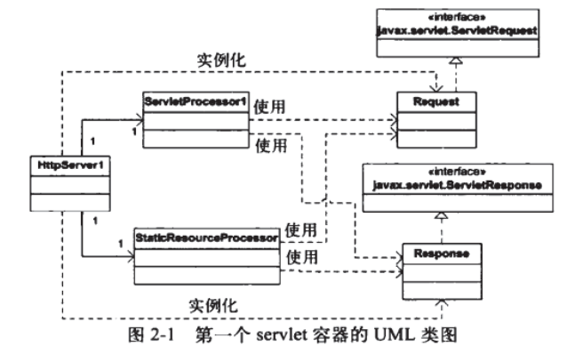
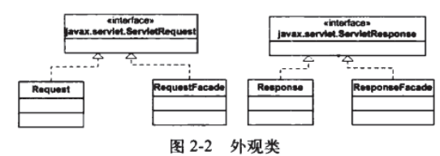

本章会通过两个应用程序示例展示简单的servlet容器
javax.servlet.Servlet接口 该接口中定义了以下5个方法
1 2 3 4 5 6 7 8 9 public void init (ServletConfig config) throws ServletExceptionpublic void service (ServletRequest request, ServletResponse response) throws ServletException, java.io.IOException public void destroy () public ServletConfig getServletConfig () public java.lang.String getServletInfo ()
init()..程序员可以自定义初始化方法，一般情况下留空service()..第一个客户端请求到达时，servlet容器会调用相应的servlet的service方法，并把ServletRequest和ServletResponse作为参数传入。service()方法会被调用多次destroy()..servlet示例从服务中移除前会被调用，用于清理资源，如内存，句柄，线程等
应用程序1 一个功能齐全的servlet容器应该完成以下任务
当第一次调用servlet时，要载入servlet类，调用init方法（仅此一次）；
针对每个request请求，创建一个Request对象和一个Resposne对象；
调用相应的servlet的service方法，将Request对象和Response对象作为参数传入；
当关闭servlet时，调用destroy方法，并卸载该servlet类。
应用实例1不会完成上面所有任务，只会完成如下事情

HttpServer1类 既可以对静态资源请求，又能对servlet资源进行请求。
请求静态资源：
1 http://localhost:8080/staticResource
请求servlet资源：
1 http://localhost:8080/servlet/servletClass
1 2 3 4 5 6 7 8 9 10 11 12 13 14 15 16 17 18 19 20 21 22 23 24 25 26 27 28 29 30 31 32 33 34 35 36 37 38 39 40 41 42 43 44 45 46 47 48 49 50 51 52 53 54 55 56 57 public class HttpServer1 public static final String SHUTDOWN = "/shutdown" ; private boolean shutdown = false ; public void await () ServerSocket serverSocket = null ; int port = 8080 ; try { serverSocket = new ServerSocket(port, 1 , InetAddress.getByName("127.0.0.1" )); } catch (IOException e) { e.printStackTrace(); System.exit(1 ); } while (!shutdown) { Socket socket = null ; InputStream inputStream = null ; OutputStream outputStream = null ; try { socket = serverSocket.accept(); inputStream = socket.getInputStream(); outputStream = socket.getOutputStream(); Request request = new Request(inputStream); request.parse(); Response response = new Response(outputStream); response.setRequest(request); if (request.getUri().startsWith("/servlet/" )) { ServletProcessor1 processor1 = new ServletProcessor1(); processor1.process(request, response); } else { StaticResourceProcessor staticResourceProcessor = new StaticResourceProcessor(); staticResourceProcessor.process(request, response); } shutdown = request.getUri().equals(SHUTDOWN); } catch (IOException e) { e.printStackTrace(); } finally { try { inputStream.close(); outputStream.close(); socket.close(); } catch (IOException e) { e.printStackTrace(); } } } } public static void main (String[] args) HttpServer1 httpServer1 = new HttpServer1(); httpServer1.await(); } }
很多部分与第1章的应用程序相似。
Request类 实现了ServletRequest接口，但处理方式和第1章的几乎完全相同。
1 2 3 4 5 6 7 8 9 10 11 12 13 14 15 16 17 18 19 20 21 22 23 24 25 26 27 28 29 30 31 32 33 34 35 36 37 38 39 40 41 42 43 44 45 46 47 48 49 50 public class Request implements ServletRequest private InputStream input; private String uri; public Request (InputStream input) this .input = input; } public void parse () StringBuilder request = new StringBuilder(2048 ); int i; byte [] buffer = new byte [2048 ]; try { i = input.read(buffer); } catch (IOException e) { e.printStackTrace(); i = -1 ; } for (int j = 0 ; j < i; j++) { request.append((char )buffer[j]); } System.out.print(request.toString()); uri = parseUri(request.toString()); } public String parseUri (String requestString) int index1, index2; index1 = requestString.indexOf(' ' ); if (index1 != -1 ) { index2 = requestString.indexOf(' ' , index1 + 1 ); if (index2 > index1) { return requestString.substring(index1 + 1 , index2); } } return null ; } public String getUri () return uri; } }
Response类 这里直接保留了第1章发送静态资源的sendStaticResource()
1 2 3 4 5 6 7 8 9 10 11 12 13 14 15 16 17 18 19 20 21 22 23 24 25 26 27 28 29 30 31 32 33 34 35 36 37 38 39 40 41 42 43 44 45 46 47 48 49 50 51 52 53 54 55 56 57 58 public class Response implements ServletResponse private static final int BUFFER_SIZE = 1024 ; Request request; OutputStream outputStream; PrintWriter printWriter; public Response (OutputStream outputStream) this .outputStream = outputStream; } public void setRequest (Request request) this .request = request; } public void sendStaticResource () throws IOException byte [] bytes = new byte [BUFFER_SIZE]; FileInputStream fis = null ; try { File file = new File(Constants.WEB_ROOT, request.getUri()); if (file.exists()) { sendOKHeader(); fis = new FileInputStream(file); int ch = fis.read(bytes, 0 , BUFFER_SIZE); while (ch != -1 ) { outputStream.write(bytes, 0 , ch); ch = fis.read(bytes, 0 , BUFFER_SIZE); } } else { String errorMessage = "HTTP/1.1 404 File Not Found\r\n" + "Content-Type:text/html\r\n" + "Content-Length:23\r\n" + "\r\n" + "<h1>File Not Found</h1>" ; outputStream.write(errorMessage.getBytes()); } } catch (Exception e) { System.out.println(e.toString()); } finally { if (fis != null ) { fis.close(); } } } public void sendOKHeader () String cacheHeader = "HTTP/1.1 200 OK\r\n\r\n" ; try { outputStream.write(cacheHeader.getBytes()); } catch (IOException e) { e.printStackTrace(); } } @Override public PrintWriter getWriter () throws IOException printWriter = new PrintWriter(outputStream, true ); return printWriter; } }
StaticResourceProcessor类 直接调用response中定义的sendStaticResource()发送静态资源。
1 2 3 4 5 6 7 8 9 public class StaticResourceProcessor public void process (Request request, Response response) try { response.sendStaticResource(); } catch (IOException e) { e.printStackTrace(); } } }
ServletProcessor1类 处理对servlet资源的HTTP请求
为了载入servlet类，需要创建一个类载入器，并且指明到哪里查找要载入的类。本节中会到Constant.WEB下找要载入的类,进行加载。加载完成后调用它的service()
1 2 3 4 5 6 7 8 9 10 11 12 13 14 15 16 17 18 19 20 21 22 23 24 25 26 27 28 29 30 31 32 33 34 35 36 37 38 39 40 41 42 43 44 45 46 47 48 49 50 51 public class ServletProcessor1 public void process (Request request, Response response) String uri = request.getUri(); String servletName = uri.substring(uri.lastIndexOf("/" ) + 1 ); URLClassLoader loader = null ; try { URL[] urls = new URL[1 ]; URLStreamHandler streamHandler = null ; final File classPath = new File(getClasspath()); String repository = (new URL("file" , null , classPath.getCanonicalPath() + File.separator)).toString(); urls[0 ] = new URL(null , repository, streamHandler); loader = new URLClassLoader(urls); } catch (IOException e) { e.printStackTrace(); } Class<?> myClass = null ; try { final String fullClassName = this .getClass().getPackage().getName() + "." + servletName; myClass = loader.loadClass(fullClassName); } catch (ClassNotFoundException e) { e.printStackTrace(); } Servlet servlet = null ; try { servlet = (Servlet)myClass.newInstance(); servlet.service((ServletRequest)request, (ServletResponse)response); } catch (InstantiationException e) { e.printStackTrace(); } catch (IllegalAccessException e) { e.printStackTrace(); } catch (ServletException e) { e.printStackTrace(); } catch (IOException e) { e.printStackTrace(); } } private String getClasspath () return this .getClass().getProtectionDomain().getCodeSource().getLocation().getPath(); } }
测试简单的servlet：PrimitiveServlet 编写一个简单的servlet
1 2 3 4 5 6 7 8 9 10 11 12 13 14 15 16 17 18 19 20 21 22 23 24 25 26 27 28 29 30 public class PrimitiveServlet implements Servlet @Override public void init (ServletConfig servletConfig) throws ServletException System.out.println("primary servlet init!!!" ); } @Override public ServletConfig getServletConfig () return null ; } @Override public void service (ServletRequest servletRequest, ServletResponse servletResponse) throws ServletException, IOException System.out.println("service method is invoked!!!" ); PrintWriter out = servletResponse.getWriter(); out.println("Hello. Roses are red." ); out.print("Violets are blue" ); } @Override public String getServletInfo () return null ; } @Override public void destroy () System.out.println("primary servlet destroyed!" ); } }
服务器启动后浏览器访问
1 http://localhost:8080/servlet/PrimitiveServlet
浏览器会输出
应用程序2：对应用程序1的一些优化 程序1在调用目标servlet的service()时对request和Response进行了强转。
1 2 3 4 5 try { servlet = (Servlet)myClass.newInstance(); servlet.service((ServletRequest)request, (ServletResponse)response); }
本小节用外观模式来优化这一部分

简单说明一下就是，RequestFacade持有Request，调用servlet的service()时传递Facade类，而非request类。
1 2 3 RequestFacade requestFacade = new RequestFacade(request); ResponseFacade responseFacade = new ResponseFacade(response); servlet.service((ServletRequest)requestFacade, (ServletResponse)responseFacade);
这么做的原因是Request，Response中包含sendStaticResource()等servlet无需去调用的方法，传递Facade类使servlet对这些方法不可见。
参考 http://sishuok.com/forum/blogPost/list/4067.html
https://blog.csdn.net/qq_33983617/article/details/81836539
源代码：https://github.com/serivires/how-tomcat-works/